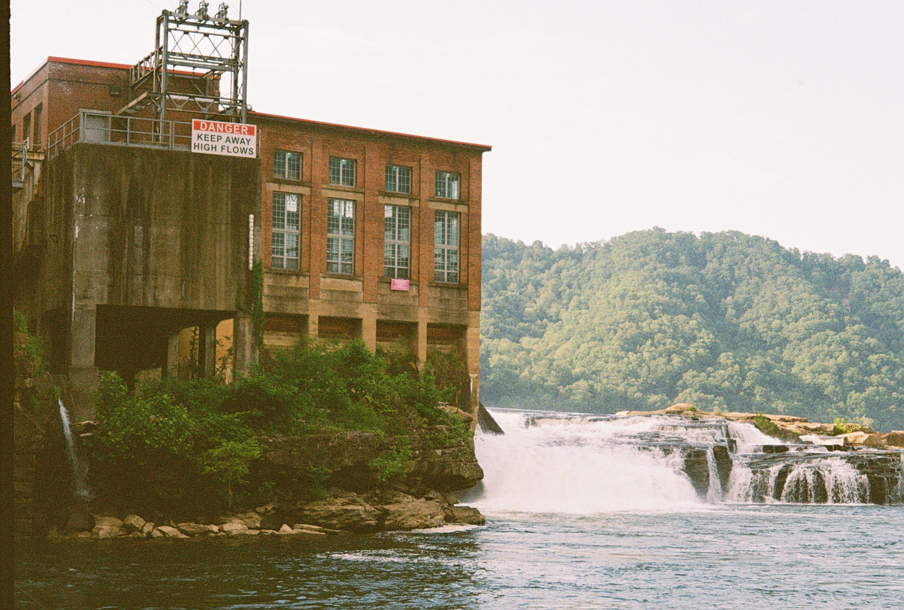
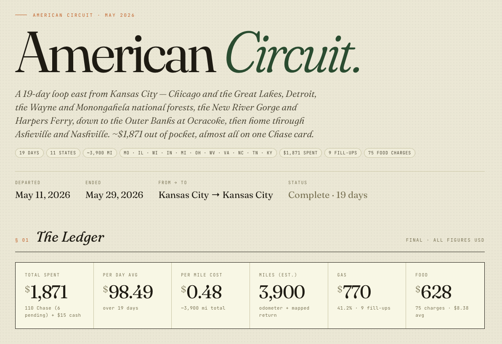
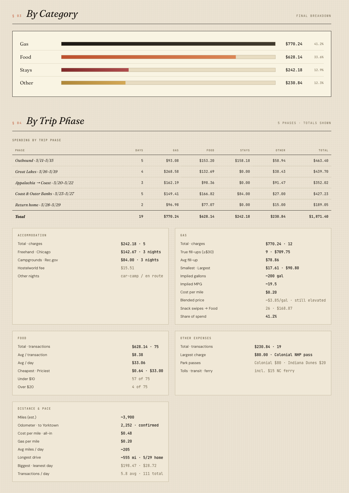

the following field notes were taken from my written thoughts, journal entries, and voice notes over my nineteen-day east coast road trip. i compiled them here, separated by date with some refinements in post.
5/12: my three-day wall solo travel curse
i have found myself thinking about extended solo travel, such as this trip and the last, and perhaps some of the caveats that come with it. i have noticed that between the western trip, and then more specifically this current one, i hit a mental wall at the three-to-five-day mark. by this, i mean that i decide a destination, spend a day there, and if i enjoy it, i extend to three days or so. at the three-day mark, i usually hit a wall. there are outliers of course, but this is my experience. i suspect that this happens because when traveling mostly alone in a vehicle you also sleep in, you never have a true sense of belonging. i also found that when i actually book a place to stay for 3~ days, i do feel a sense of belonging and less transient. this is natural.
for example, los angeles was: visiting my old friends, dj and sara, exploring the inner city and outskirts, test running what it would be like to live there, visiting ucla, the beach (ventura), and so much more. driving there was a journey in itself. my point is that there were clear anchored reasons with lots of rich flexibility in a place like that, and i stayed five~ days, in proper houses.
this would be one of the outliers. i could have stayed longer, and of course i had extended catalysts and purposes in doing so. conversely, in san francisco, i didn't have any friends there, and had no pretext about the place, yet it was a city i was very excited to see for lots of reasons. i had a full day dedicated to silicon valley, the arts district and the mission, riding the transit there, and a full day doing golden gate bridge stuff… and much more. and! i didn't feel fatigued there until day six or so.
it's the same idea: san francisco and la both similar feels, rich cities, much to do!
central coast surprised me. i didn't think i was going to stay in santa cruz for five days as well, but i ended up staying because i loved it. at least what i'm finding in chicago is yes, i could stay here and just keep exploring and finding new neighborhoods, but i don't have the same catalytic feeling as i did in santa cruz or perhaps the other california cities. this likely just means i like california more and for different reasons, and i even feel this way much of the time, with or without people.
i think on trips with other humans, for example, one of my sisters, it would be different because you have a companion, and that's two different preferences, ideas, mental maps, and desires regarding travel in new places completely. for another example, when visiting a place/city with a person who lived there or lives there, i find that the fatigue takes much longer to kick in. oftentimes not for a week plus. i experienced this in both montana and san diego previously. road trip fatigue is real too, as driving two full days on both the front and back halves can be tiring. but solo, you have your own pace! just different speeds and dynamics.
i think my first impressions of this extended midwest leg of the trip are: that i feel like i'm going to probably hit this wall pretty quickly, continually, until i reach proper destinations. i love seeing the in-between, and i prioritized county roads, state highways, and small towns, because that is true americana and can drastically change the feeling of what could be monotonous interstate travel. don't miss it! shoutout blue highways.
tying back to above, perhaps these midwestern cities have less to offer. i think that's the wrong way to think about it. of course every place has many things to offer, but not all places are created equal. the joy experienced in a place is directly proportional to the desire, pretext, and openness to the place. preconceptions play a large role here.
san francisco is not la, la is not salt lake, salt lake is not chicago, so on and so forth. i think i've decided to extend this trip to the east coast, just because i think staying just localized in the midwest is going to be really comparatively boring. not boring in a, "i'm not having a good time and i wish i was home" way, but just comparatively, very different. i knew this going into it, and of course i'm still excited to see the greater chicagoland area, the dunes of indiana and gary, ohio, michigan, and appalachia.
all this to say, the unintentional framework i kind of have experienced thus far is the "three-day wall":
- day one: i am established, present, and open to see what it's about.
- day two: a full day, the most rich day, and it's kind of almost information overload. at the end of day two, i usually crash hard
- day three: wake up and re-assess: hey, do i want to stay here? did i enjoy what i saw yesterday? is there another full day worth of stuff like there was in california, or did i kind of get my fill? that's not a reason to keep staying at a place.
my point is, it goes from initial exploration, hunger, desire, and just focused freshness, and then it's just kind of like i'm a spectator here. sure, i could sit in chicago for another two weeks, moving around hostels and hotels and the suburban area, but that doesn't really excite me as much as just packing up, dipping, picking a new place, and seeing if i can push past the three days. the three-day test isn't a litmus test. it's more just a, "hey, it's day three. now what?" and then i don't know.
i don't think my mindset is about, "i'm having a good time here." i'm still optimistic about travel, but then it begs the question of what is the point of traveling? i can just pick anywhere, consume for three days, take in as much content and all of it, and then i guess it's experience, it's added experience. i guess it feels more active when i'm more indifferent about a place compared to falling in love with the place. i guess i'm sort of browsing and/or window shopping for where i could potentially live in this country. like short-form media, but for solo travel.
to me, this is kind of the whole point of these trips: take the loaded car, take my time, don't rush anything. i'm not on anybody else's schedule, and i attempt more normal* things in all these places. i don't need to go do the ten biggest tourist things because i'm not on a one-day timeline, and funnily enough, three days, three to four days is kind of enough half the time, which is my whole point of making this field note.
all that to say, i enjoyed my time in chicago. i have decided not to extend my time, and i will be pushing north and then south and then east, back west, south, and then home. let's see what the timeline looks like in the end!
may 12
i find it counterintuitive that seemingly for the first time in human history people happily, all day long, pay more for supposedly healthier options, or lower-calorie options. the last couple hundred years post-globalization and worldwide ag/exports are the first time humans have prioritized food that is technically less calorically dense. heh. not surprising but kind of hilarious
may 17: death of small-town america
driving through small-town america as i mentioned above leaves me ever so nostalgic. nostalgic for what? places i have never been to, so it is not the place in itself, as that is purely the means. the ends are most definitely a feeling. towns of 50-500 people, derelict and fading back into the woods. this is more apparent in west virginia. but even ohio, indiana, michigan, all have these. towns that i presume boomed post-wwii or even earlier, as american ag began booming. things have changed, rearranged, so do i. i am drawn to these places because they hold rich history, and are deeply personal. most people that live here have abundant wisdom, and are often quite aged. their kids left for the cities forty years ago, and never returned. they all have beautiful churches, and quirks of the past. it does not take a genius to infer where this ends up. farmers ever increasingly forget how to farm, and hire cheap labor to work the farms. once they age out or pass away, what is left to give life to these towns? i see it all across southern missouri too. i feel like i almost have a duty to capture the decline of this, as it accelerates. suburbs and exurbs are killing these places. so many gems, so many great people. rarely have i interacted with individuals in places such as these and felt ignored or intrusive. cities can make you feel that way.
may 18
another discovered truth about solo traveling is that there are days that are just downright depressing, boring, sad. the fact of being alone, far away from home base, and not talking to any humans. plus just being on the move so much really does affect your mood. lesson in there? however, on short 2-4 week bursts, it makes it all worth it and sustainable at that, because experiencing something in solitude is a completely different type of experience than if you were with a whole crew or team of people. of course i would love to have people with me but, alas.
ohio seems pretty familiar. i would just assume that there are more people here than missouri, but i think it gets memed because it's kind of the missouri of the midwest. just a lot of farming, one or two big towns, a little bit of national forest, but that's about it. kind of feels like home especially driving the state highways and back roads.
may 20
honestly, the whole third-wave hipster millennial coffee shop that propagated out of the late 2000s or maybe even 1990s is principally flawed because the traditional café, or local downtown restaurant has always handled coffee and meals. i presume at some point coffee snobs created the idea of true new-gen dedicated coffee shops with an extra-large emphasis on drink variety and setting. initially, no food. this is fine as a standalone business, but it feels like a scam at times. of course municipalities ought to have coffee available, downtown and local with food, but where it rubs me the wrong way is the sterility and lonesomeness of certain said shops. any coffee shop without food is doing themselves a disservice. everybody eats every day, but you don't need a coffee every day. that's the difference, intrinsically a little scammy, and makes me not want to give five or six dollars for a drink, but on the other hand, people (myself included at times) just want to spend $7 on a sugary beverage. as i said, this specialty shop is still a much newer phenomenon in its current form factor, and people my age view it as the normal. perhaps it is? i mean soda is pretty new still in the big picture. this comes from a place of eating at local diners in smaller towns across the midwest that are oftentimes packed, and comparing to the standalone coffee shops with no food that are empty. hm.
may 21
i will often daydream about being born in different decades or eras. and as a different person. some years on the brain recently that stand out: 1750, 1840, 1907, 1940-45, 1970, 1980, 1990
by the time i made it to the back half of appalachia, i found that capturing everything i perceive is 100% impossible and should not be strived for, because the essence of "things" is not meant to be captured in a photo, video, message, or anything of the sort for that matter. i love taking a good photo, but rarely, if ever, has a photo of a magnificent landscape ever done it true justice. at least today, i've really spent most of the day just taking it in and filming very minimally. i suppose that in cities, it's easier to capture essence a bit better, but in nature, i am at a loss for words and tools. and i prefer it that way.
back to the nature of traveling. am i trying to run away and escape landlocked missouri and my entire life there? or am i genuinely trying to see as much of the country as possible and have unbridled explorations? or am i just trying to spend some of the money i have saved. there are more catalysts for the desire to explore, but primarily i think it is innate and programmed biologically. to a point, some of us hate it. at this point in my life, i love it. not any one place in itself as ends to fulfill some deeper calling, but as the process, and the length of it all. not rushing is key to solo travel. and i like that it all blends through the windshield. i return home and rest, yet i find myself happier to be here, there, and everywhere. and i find myself appreciating people much more, and meals, and small things you take for granted when being transient-by-choice. i feel as if you can see all the places but if you were unhappy during it, or going for the wrong reasons, then you will return home bitter and longing for more. i feel very satisfied and happy to be home and live at home. this may sound counteractive to my "window shopping" proposal, yet both can be true. a place is ultimately what you make it. i believe most people have the capacity to be happy anywhere.
may 23
my thoughts and feelings on tourist towns, turning everything into a commodity or experience, even in beautiful places where you don't need something like a fucking waterpark or museum or just fodder like that. the epitome of this in my own limited experience is silver dollar city in branson, missouri … or the entire tourist complex in gatlinburg, tennessee. you are literally in the smoky mountains. wtf?
i find it stupid because even now, i am sat in virginia beach with no preconception of the place, and upon first entering i just tried to go "downtown" because… you know, when you see that there is beach architecture in a place, you think, sure! little do i know, i drive downtown and all i see is condominiums and resorts. okay… now let me find street parking and maybe i can get to the beach that way. nope, all of the parking is paid, actively ticketed and goes on for blocks. all of it is attached to these just shitty restaurants on brand new blocks sprawling away from the ocean. so i try to find where maybe the actual residents live. i head a little south… nice, so i find a nice beach, find street parking, cool, works well, and the beach is beautiful. i have a great time, i go for a walk, lovely. the second i leave, i'm just thrown right back into the just capitalism-maximizing mini golf aquarium junk. surrounded all by condos and just junk. i didn't see a lot of this in california. really at all. of course, there's disneyland, and i don't think i'm better for not needing or wanting these things, but i just feel like it misses the point. prior to everybody having an automobile, i feel like this type of stuff didn't exist. of course, there have always been eclectic strange attractions in different places.
but now we're just in a state where it's like gatlinburg, silver dollar city, florida beach town = virginia beach town = probably a lot of the in-between. and i just hate it and i want to get away from it. i do not want to participate in an economy that is structured like that. and maybe it's families or people who need entertained, even at a lovely destination that are attracted to this stuff, or maybe some feel like the beach, or the natural beauty isn't enough. there's probably a lot of factors that go into it, but i guess i'm just noting how it makes me feel and how i dislike it.
may 25
sitting on the beach, specifically the obx, feeling larger than life, in circumstances like these, per usual. not a soul to my left. not a soul to my right. seriously, i'm looking as far as possible and it is only little birdies. zero.
the atlantic feels vastly different than the pacific. notably, there are no rocks in the water or on the beach like everywhere i've seen in the pacific. the waves even feel different. the frequency, the air, i can't smell it. i have a faint memory of being a child and being in florida and either tasting sand and seawater or smelling it slightly. it's almost, in the front of my mind, on the brain, the top of my nose, a sweet, sticky, humid smell. that's one of the only smells i have associated with memories. i honestly haven't smelled it again since, but today i got somewhere around 10% of that. i mean, the fact that i'm bringing it up now means it came to mind, perhaps because i'm on this ocean, but also perhaps because my olfactory glands can potentially choose to work sometimes. this beach is stunning.
i am forever proud of the government, or state lobbying, or whoever got this federally protected, because jesus christ, virginia beach(es) were so ugly. sure, it was a cool beach, but just the condo sprawl. short sum of it: never need to go back there. i'm about halfway down the outer banks, and i guess i'm not really sure what i expected, and that's the best part. but in terms of atlantic beaches, this is easily the most positive experience i've had, and i'm sure that tomorrow will be no different.
i sit here, though, just gazing at the beach. no phone, no music, food, no stimulation, and my mind wanders all over the place. i find it hard to think about nothing. i can close my eyes for a few seconds and focus on breathing, but my brain is just so active, always. on one hand, i appreciate this about myself, but it makes it very difficult to really just do nothing. i have to lock in to do nothing, then nothing is indeed something. it's not that i feel like i can't relax or can't chill, because i can definitely do that, but generally when i do those things, it's still with some minor stimulation. last summer was the first time in a while i really was able to have no phone, no computer, maybe just mild music or no music at all, and focus on only one thing at hand. however, the beach and all of this nature lately has made it much easier. something about sitting at the largest body, or second-largest continuous body of water in the world. it just boggles my mind every time i'm at it, and being alone really lets you soak it in. i think being at the beach with a larger group of people really takes away from it, it is easier to forget how perplexing it is. but being by yourself truly is just a different feeling, and it is a pretty strong one. i guess my takeaway is i need to have more beach access in my life, and of course, i think that's in the pipeline.
i have been transfixed on a little beach birdie. he or she has been going at it for 45 minutes, up and down as the tides crash on the sand. perfectly, every time, it knows exactly where to look, stick his beak in, carefully and tenderly walking so as to not get his tiny feet more wet than they already are. about one in every twenty times the waves break, it sorta half-flaps to get a boost to dodge the water. and now i noticed that the one to my right straight up does not care, and he was unwavering and getting hasty, wet on every other splash. i guess different strategies, right?
and it also blows my mind. i was thinking today about just how long and how far humanity as a whole has come from our humble origins. i guess that's the stuff you have the time to think about when you're traveling by yourself: the origin of religion, all types of people, preferences, why people live the way they do, explorers, people who make inventions, the wright brothers. miracle in humanity. it gives me inspiration to keep living. this is probably one of the best days i've had in a while. i can marvel at everything that humans have ever done or can ever do, and then i sit and marvel at all the great things and great people that have graced this place, and my own short life at that. and it really makes me want to find a place to truly call home for a while. and not kansas city, because that's been home, and with the way my brain is, i need something new, which also contradicts what i said earlier. but being out makes me want to stay out, at least for a while.
i could stay home, really trying to make new friends, a romantic relationship, co-workers, and so on, but that doesn't excite me in kansas city, at least at this moment. it is hard to decide where to plant my roots for the next phase of my life. if i know anything about myself, it's that i love asking questions. i love seeing new places, and my tolerance for structured change or calculated change is very high. these trips have been a large litmus test of just me being ok by myself in different places, and it really has rejuvenated me in some way.
last year, i never would've thought i'd be capable of solo tripping like this, but in the back of my mind, i've been wanting to since 2022 when i discovered mav on youtube (shoutout!). i guess i have the money and time right now, so this is what somebody would call "finding themselves," like i mentioned above a bit. after graduation, i was frozen with some fear and urgency to figure out what comes next. fine! i decided to force absolutely nothing. putting hours into people and places that you no longer live at can feel very depressing, but that is life, and you can only experience the same cycles so many times before you finally escape. i presume this will ring true most of my life, and it is my job to identify them more quickly with time to not become stuck. so i march on! time has passed, and now marching on feels incredibly freeing, i am free! i am young and so incredibly able. i genuinely do think i will leave my hometown and do what i mentioned above, but elsewhere. i believe my twenties are for trying things, meeting as many people as possible, and seeing as much as possible. i know my brain will age and get more comfortable with less as time goes on, so i will not fight what feels natural.
i do think things will work out for me. a couple of months into the job search, and i've been pretty ambitious with my applications, yes, but something will come up. open to work! yet in my idea of utopia, of course i don't want to work, at least in a traditional sense. i would rather serve my locale, farm, and help my neighbors, but that may be wishful thinking in the big 26. i also could keep living nomadically and find other income streams. i do not feel behind or ahead, i feel like me and where i am supposed to be! [redacted] i'm not interested in that. [redacted] but i do think greener pastures are ahead. not every day has to be perfect, but not every day has to be horrible, either.
there's so much to always be thankful for. i'm constantly perplexed and amazed by this world. if there's ever a day where i am bored of everything and feel like there's nothing left to explore or learn about or talk to, then i have failed. and even though i don't want to box myself in terms of personality types or anything, i know enough about myself to know what fuels me, at least by this age. maybe five or eight years ago, i didn't have that answer. i just kind of did what made sense. but through the ups and downs, getting my heart broken (multiple times in multiple ways, myself to fault for many), changing living situations, and general conflict from humans to other humans, i've learned what i pull back towards. and i need to remember that and lean on that. this is how i turn one of my million ideas into actions.
i have so many ideas, and consequently questions all the time. having many things to spend my time on at once feels productive, and it is a rewarding dopamine loop in the moment, but when you zoom out after a couple of months, it's like, "what have i actually built, learned, or improved?" (and the goal is not always improvement) a couple of genuinely useful things or experiences, sure, but i think being able to see day-to-day progress on something, that dopamine reward loop, is very vital for me. so whether that's writing pages in a book, reading pages in a book, tending to the garden, working on code, or trivial things like feeling my body get healthier or learning new recipes, or having more thoughts… all of those things feed the thing that is me.
and what's funny is i started this note because i was staring at the waves and thought it was a miracle that i can ask claude to brief me on the area and the history, and i can just listen to it while i stare at the waves. i didn't even do it at this location, but that was why i pulled my iphone out. and as i said above, i was just marveling at that earlier, too, just how far humanity has come. the ability to compress knowledge: word-of-mouth, to writings, to replications, to the printing press, to standardized printing, to wireless communications, the internet, decreasing distance between communication, the internet hosting an entire corpus of knowledge. and then now, language models that you can dynamically interact with that are compressed human knowledge, pretty much just the best bits, and talking to a slab of glass and having any question in the world answered.
i don't know if accessibility to near-agi is a good or bad thing for me. definitely more helpful than hurtful, and the only hurt i worry about losing is getting deeply involved in something. i wrote on this a year ago, stating something along the lines of using ai for peripheral and assistant tasks, and avoiding when i truly want to deep dive and learn source material. say if it was 20 years ago, i would definitely wonder more about solutions, and probably come up with them more organically. i still do this, but on trivial to moderate questions, i should try that more. but at the same time, everybody that ever made something kind of went off of something else. if you were trying to develop flight, you talked to people that knew math and physics and tinkered with that to try to make something new. it's no different now. it's not that we've figured everything out, because we definitely haven't in the slightest sense, but i don't know. i'm just perplexed by this world, and i never want to lose the wonder i have.
may 26
oh that mighty ocean
do not try to fight it. you will lose every time
may 28
when literally everything is optimized for convenience and speed, mom-and-pop stores naturally just fall out of business if they can't keep up. this depresses me terribly. i also should move out of missouri for health reasons. humidity and glyphosate….
may 29
the most interesting people i have talked to
- "nick" from puerto rico
- video creator guy at mr. beef
- two guys at the wayne national forest in ohio
- my train buddy in thurmond, west virginia
- and both of the nat'l park ladies at ocracoke and craggy overlook.
log
| date | activity |
|---|---|
| 5/11 | leave kc, sleep in joliet area travel stop |
| 5/12 | leave car in new lenox, train to chi, slow |
| 5/13-5/15 | slowhand (lincoln, wicker, millennium) |
| 5/15 | sleep in kenosha @ tracy, see levi |
| 5/16 | kenosha -> milwaukee, sleep in whitefish |
| 5/17 | milwaukee -> monroe, mi, sleep @ cb |
| 5/18 | monroe to dt to wayne nf in ohio, athens |
| 5/19 | athens->wv south river to fayetteville |
| 5/20 | fv south to thurmond, miner trail, -> wv scenic, thru monongahela nf, cranberry, marlinton, 250 to harrisonburg va end |
| 5/21 | harrisonburg north to harpers ferry through state highways two hours at harper ferry then south/east into virginia, finishing in williamsburg//yorktown area |
| 5/22 | williamsburg, yorktown, jamestown, staying here again |
| 5/23 | ? pushed to virginia beach then into nc, coinjock/elizabeth city for two nights |
| 5/24 | no sleep day in elizabeth, stayed at rest stop again |
| 5/25 | obx day 1 : ending @ oregon inlet |
| 5/26 | obx day 2 : ending @ ocracoke |
| 5/27 | obx day 3 : ocracoke leave 12:45 swanquarter to asheville arrive 11 pm |
| 5/28 | asheville day, head to tn side to zzz evening, ended in north nashville, slept cb |
| 5/29 | gunned it home, thru ky then illinois, cape girardeau, up the mississippi, skirt stl, stop in como for radio stuff, then home by 4:30 |

